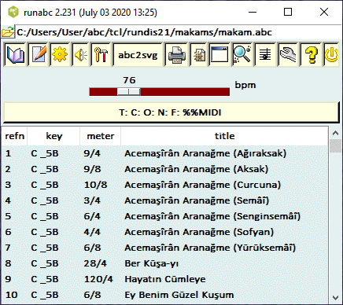
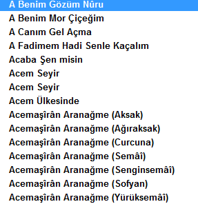
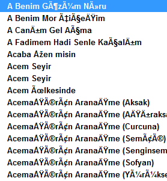
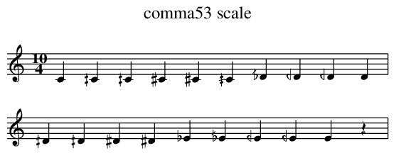
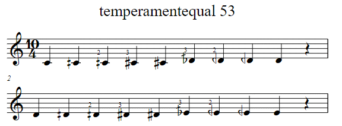
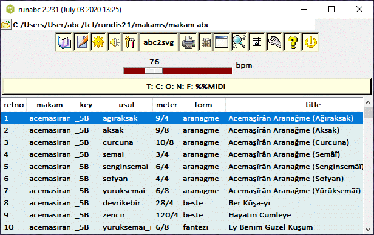

There is already quite a lot of online information about Turkish makams -- Wikipedia is a good source. There are also many YouTube videos of performances of this music. This note is therefore confined to the particularities of this database.
Unlike western music, the notes in the scales are not equal tempered. Here an octave is divided into 17 or 24 divisions depending on whether the music is from classical or folk sources. Different accidental symbols are used: see AEU or U+E450-U+E45F for example. Presently, abcm2ps presents the AEU glyphs and abc2svg presents the U+E45-U+E45F glyphs.
A makam refers to a particular mode that uses a specific subset of these notes in the octave. Just like Western music has various modes like major, minor, dorian, and etc., Turkish classical music have about one hundred modes or makams. The modes give the music a distinctive arabic flavour. For example click Geldik Gidiyoruz to hear the rendition produced by the computer.
Though the composer field C: has been preserved, it is unlikely that any of these tunes are still protected under copyrights since almost all the composers have been dead for more than 70 years. A list of the composers and their time of death may be downloaded here.
Changes to the abc files now allow it to be rendered and played by the abc2svg javascript library besides abcm2ps and abc2midi. A new microtone representation developed by Hudson Lacerda and Jean-François Moine improves the accuracy of the abc translation. The bad tempo indications in some of the files resulting in the music being played too fast was corrected.
To facilitate renderiing of the music, format headers are included in the distribution files. You should use the most recent version of abc2svg, abcm2ps and abc2midi and ensure that the headers are used.
If you are curious to know how the collection looks or sounds like, here are a few examples. Click on the midi, pdf, or youtube labels. The midi and pdf files were created from the abc representations.
| Acemasiran Pesrev | midi | youtube | ||
| Ruhumda Derin | midi | youtube | ||
| Su Daglari Delmeli | midi | youtube | youtube | |
| Kopruden Gecti Gelin | midi | youtube | youtube |
You can download the zip file from here. The file was tested on runabc.tcl and EasyABC; however, it is important that these applications link to the most recent versions of abc2midi and abcm2ps. Abcm2ps should be version 8.14.9 or higher and abc2midi should be at least 4.39. The older version of the collection with tempo corrections is still available in the zip file makam16.zip in case the newer versions of the software does not work for you. The older version is not compatible with abc2svg.
If you are using my program runabc as a user interface to the abcmidi and abcm2ps programs, you should check the option 'use ps header' which is found in the Options menu (wrench icon). Furthermore you should set the character encoding (in the Options menu) to UTF-8.
Runabc now allows you to use abc2svg to render and play the music, or besides abcm2ps and abc2midi. Here is how the standard user interface looks.

The files are encoded in utf-8 character encoding scheme in order
to display the Turkish characters. The names of the tunes should
appear
| like  | and not like  |
If the font is not correct, it is necessary to indicate to your program to use the utf-8 encoding scheme. If you are using runabc.tcl, the encoding scheme selection tool is one of the submenu options under the wrench icon menu.
There were several issues regarding the conversion of the abc representation to PostScript or SVG files. First abcm2ps does not have all the microtone symbols built-in the program and it was necessary to specify these symbols in an external file written in PostScript language (comma53.fmt). This information can also be placed in the head of the abc file. Fortunately abcm2ps is able to translate these definitions to SVG notation so the same format file can be used for SVG output.
The production of the abc files, introduced several new challenges. In order to produce the music scores in PostScript and SVG format, it was necessary to define the special symbols used to define the altered notes. These commands appear in the header of each abc file. If your software does not automatically transfer this header information to abcm2ps then you will need to tell abcm2ps to load one of the format files. Here is an example of the header with instructions on how to display these symbols.
I:abc-charset utf-8
% accidentals Arel - Ezgi
%%beginps
/sbar {M -4.0 6 RM 5.0 2 RL 1 SLW stroke}!
/hbar {M -3.0 -1.5 RM 7.0 3 RL 1.6 SLW stroke}!
/ft15156 {ft0}! % _60/53 - b5
/ft12084 {2 copy ft0 sbar}! % _48/53 - b4
/ft9012 {2 copy ft0 sbar}! % _36/53 - b3
/ft5940 {ft1}! % _24/53 - b2
/ft2868 {ft1}! % _12/53 - b1
/sh2868 {sh1}! % ^12/53 - #1
/sh5940 {sh1}! % ^24/53 - #2
/sh9012 {sh0}! % ^36/53 - #3
/sh12084 {sh0}! % ^48/53 - #4
/sh15156 {2 copy gsave T 0 0 1.2 dup scale sh1 grestore hbar}! % ^60/53 - #5
%%endps
The comma-53 scale is one of many equal temperament scales. Western music is based on the 12 equal temperament (12-TET) scale which divides an octave into 12 semitones. The comma-53 scale divides an octave into 53 equal tones. One could imagine a piano where there are 53 keys in each octave. Like Western music, Turkish classical (KTM) and Turkish folk music (THM) uses a small subset of these tones. ABC notation refers to the natural notes by the letters A B C D E F G or a b c d e f g (for the higher octaves). Sharps and flats are indicated by prefexing the letters with either a ^ or _ -- for example, C sharp is indicated as ^C. Because other music systems require pitches that may fall in between these notes, the ABC notation has introduced microtones which are usually indicated by a fraction. For example ^1/2C refers to a microtone whose pitch falls half way between C and ^C.
The cents unit is used to describe the smaller subdivisions of the standard semitone and octave. A semitone is divided into 100 cents and an octave consisting of 12 semitones is divided into 1200 cents. The semitones are equally spaced so the pitches of C, ^C, D, ... are at 100, 200, 300, ... cents.
Small pitch changes are indicated by the MIDI pitch wheel command which shifts all the pitches of all the notes belonging to a channel by the same amount. If one has a chord of several notes, then it is necessary to play each note in a separate channel in order to control the pitches of each note independently. The pitch wheel units range from 0 to 16383 where the number 8192 indicates a pitch change (pitch bend) of zero. Thus negative and positive pitch shifts depend on whether the pitch bend value is above or below 8192. The range of the pitch bend is equivalent to plus or minus 2 semitones. Thus one semitone has a range of 4096. Since a semitone has a width of 100 cents, each cent is equivalent to a pitch wheel shift of 40.96.
The comma-53 scale divides the octave consisting of 1200 cents into 53 equal divisions. Therefore one comma has a width of 1200/53 or 22.64 cents. A semitone has a width of 100 cents, so four individual microtones can fit into a semitone with a little left over. You can compute the cents shift of each comma using the following pseudo code.
In pseudocode:
ratio2cents(x) {
return 1200.0 * log2 (x)
}
for i = 0 to 53 {
x = power (2, i/53)
print ( ratio2cents (x) )
}
(You still need to put the values in modulo 100.00, and then subtract
100.00 from numbers greater than 50.)
Using C as basis, the "natural" notes are in steps with i equal to:
0, 9, 18, 22, 31, 40, 49, 53
C D E F G A B c
To adjust the pitch to A=440, substract 5.660377358490678 cents.
The note A is the standard pitch for tuning an instrument -- usually to 440 Hz. Therefore it is convenient to lock in the the comma-53 scale to the key of A. Therefore the natural note A coincides with one of the comma pitches and does not need to be altered. However, all the other 12 semitones do not align with the comma-53 scale and need to be shifted by a small amount as shown below.
C ^C D ^D E F ^F G ^G A ^A B
-5.6 7.6 -1.9 11.3 1.9 -7.5 5.6 -3.8 9.5 0.0 13.2 3.8
The natural notes of the comma53 scale are in a chain of fifths of 701.887 cents. This results in the cents deviations listed below. The values are computed by:
A = 0.0 E = 1 * qs - 700 = 1.89 cents B = 2 * qs - 1400 = 3.78 F# = 3 * qs - 2100 = 5.57 C# = 4 * qs - 2800 = 7.56 G# = 5 * qs - 3500 = 9.45 D# = 6 * qs - 4200 =11.34 A# = 7 * qs - 4900 =13.23 F = 2800 - 4 * qs =-7.56 C = 2100 - 3 * qs =-5.57 G = 1400 - 2 * qs =-3.78 D = 700 - 1 * qs =-1.89 with qs = fifth = 701.89
The first release of the of the makam database in abc format used microtones of values ^1/4, ^1/2, ^3/4 and ^7/8 and their corresponding flats. Essentially, the octave was split into 48 divisions; however, the command
%%MIDI tuningsystem comma53instructed abc2midi to translate these microtones to the 53 scale. To be more accurate, we should use microtone values ^12/53, ^24/53, ^36/53, ^48/53, and 60/53. This gets rather awkward so a new integer notation was introduced and the microtones are now expressed as ^1, ^2, ^3, ^4 and ^5. A MIDI command
%%MIDI temperamentequal 53 // 53-TET Turkish scaleinstructs abc2midi that the octave is split into 53 equal divisions which translate the microtones to units of 12/53 semitones. Even the natural notes are shifted to correspond to the comma-53 scale. The %%MIDI tuningsystem comma53 must not appear any longer. Here is a sample abc file for the old microtone notation.
I:abc-charset utf-8
%%beginps
/micronewps {1}
/sbar {M -3.0 4.0 rmoveto 4.0 4.3 rlineto stroke}!
/hbar {M -3.0 -1.0 rmoveto 6.0 1.5 rlineto stroke}!
/num2 {M 2.0 6.0 rmoveto /Times-Roman 10 selectfont (2) show}!
/num3 {M 4.0 6.0 rmoveto /Times-Roman 10 selectfont (3) show}!
/ft1543 {2 copy ft0 sbar}! %_7/8
/ft515 {ft1543}! %_3/4
/ft3{gsave -1 1 scale exch neg exch ft0 grestore}!
/ft259 {2 copy ft3}! %_2/4
/sh3 {2 copy sh1}! %_1/4
/sh259 {2 copy sh1}! %^2/4
/sh515 { 2 copy sh0}! %^3/4
/sh2055 {2 copy sh1 hbar}! % ^9/8
%%endps
X:1
T: comma53 scale
M: 10/4
L: 1/4
K: C
%%MIDI tuningsystem comma53
C ^1/4C ^2/4C ^3/4C ^C ^9/8C _3/4D _2/4D _1/4D D |
^1/4D ^2/4D ^3/4D ^D _E _3/4E _1/2E _1/4E E z|
^1/4E ^2/4E ^3/4E F ^1/4F ^1/2F ^3/4F ^F z2|
_3/4G _2/4G _1/4G G ^1/4G ^2/4G ^3/4G ^G z2|
And here is how it is rendered by abcm2ps

Here is the same sequence using the integer microtone notation.
X:1 T: temperamentequal 53 M: 10/4 L: 1/4 K: C %%MIDI temperamentequal 53 C ^1C ^2C ^3C ^4C _3D _2D _1D D z| D ^1D ^2D ^3D ^4D _3E _2E _1E E z| E ^1E ^2E ^3E F ^1F ^2F ^3F ^4F z| _4G _3G _2G _1G G ^1G ^2G ^3G ^4G|And here is how it is rendered by abc2svg

Here
is how it sounds like.
Each of the tunes in the SymbTr data base is in a separate file with a long name similar to saba--sarki--agiraksak--camlar_altinda--bimen_sen.txt. The double dashes separate the file name into 5 fields. They are makam, form, usul, title, and composer respectively. Makam corresponds to the mode: in western music this would correspond to major, minor, dorian ... ; there is generally a specific key signature associated with the makam in this set. There are approximately 200 different makam types in this collection. The second field, form, distinguishes vocal, instrumental, religious, long melody and other forms. There are at least 50 form types distinguished in this collection. The third field, usul refers to the time signature, rhythm and placement of beats in the music. Over 150 usuls are distinguished. The title and composer fields are often abbreviated in the file name. This information is included in the N: field for every tune.
A runabc extension was developed for sorting and separating the tunes by one of makam, form and usul designators. If you have the latest version of runabc, this extension, makext.tcl, can loaded using the 'Options /load runabc extension' and selecting makext.tcl. Clicking on any of the headings (makam, form, usul, meter, key etc.) will sort all the entries in alphabetical order for that column. In this figure, they are sorted by usul. The extension is available in the runabc.zip file and also here
Here is runabc interface after loading the makext.tcl extension.
